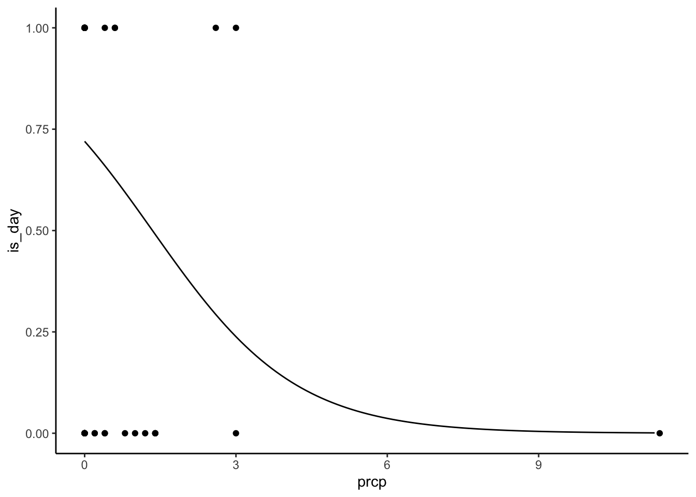

install.packages("reticulate")
reticulate::install_miniconda()Reticulate
Use R and Python together! Note: this lesson is for reticulate specifically. It’s not a Python lesson. But if you don’t know Python you should still be able to follow along with a friend.
Setup
Create an RStudio project, then create a Quarto document.
Install Python
So many ways. Too many ways! Here’s one. Do this from the R console.
Create a virtual environment
You likely keep all your installed R packages in one library. The standard practice in Python is to create separate environments for projects instead. Conda helps us do that. Still in the console!
reticulate::conda_create(
"intro-reticulate",
packages = c("jupyter", "numpy", "pandas", "scikit-learn")
)
reticulate::use_condaenv("intro-reticulate")
reticulate::py_config() # Are you in the right place?We just created a Conda environment and installed some useful Python packages. jupyter is the Python equivalent to knitr, numpy lets you work with numbers, pandas lets you work with data frames, and scikit-learn is for machine learning.
Tidy Tuesday
Learn reticulate with a Tidy Tuesday exercise. Specifically Numbats.
Load the data
We can do that with R. In your Quarto document, create an R code chunk and download the Tidy Tuesday data.
# install.packages("tidytuesdayR")
library(tidyverse)── Attaching packages ─────────────────────────────────────── tidyverse 1.3.1 ──✔ ggplot2 3.4.0 ✔ purrr 1.0.1
✔ tibble 3.1.7 ✔ dplyr 1.1.0
✔ tidyr 1.3.0 ✔ stringr 1.5.0
✔ readr 2.1.2 ✔ forcats 0.5.1── Conflicts ────────────────────────────────────────── tidyverse_conflicts() ──
✖ dplyr::filter() masks stats::filter()
✖ dplyr::lag() masks stats::lag()numbats_tidytuesday <- tidytuesdayR::tt_load(2023, week = 10)--- Compiling #TidyTuesday Information for 2023-03-07 ------- There is 1 file available ------ Starting Download ---
Downloading file 1 of 1: `numbats.csv`--- Download complete ---numbats <- numbats_tidytuesday$numbats
numbats# A tibble: 805 × 16
decimalLatitude decimalLongitude eventDate scientificName
<dbl> <dbl> <dttm> <chr>
1 -37.6 146. NA Myrmecobius fasciatus
2 -35.1 150. 2014-06-05 02:00:00 Myrmecobius fasciatus
3 -35 118. NA Myrmecobius fasciatus
4 -34.7 118. NA Myrmecobius fasciatus
5 -34.6 117. NA Myrmecobius fasciatus
6 -34.6 117. NA Myrmecobius fasciatus
7 -34.6 118. NA Myrmecobius fasciatus
8 -34.6 117. NA Myrmecobius fasciatus
9 -34.6 117. NA Myrmecobius fasciatus
10 -34.6 117. NA Myrmecobius fasciatus
# … with 795 more rows, and 12 more variables: taxonConceptID <chr>,
# recordID <chr>, dataResourceName <chr>, year <dbl>, month <chr>,
# wday <chr>, hour <dbl>, day <date>, dryandra <lgl>, prcp <dbl>, tmax <dbl>,
# tmin <dbl>Numbat circadian rhythms
Were numbats sighted during the day or at night? Create another R chunk and categorize sighting time of day into day and night. The numbers look pretty even! But could environmental covariates influence that?
numbats <- numbats %>%
mutate(is_day = hour >= 6 & hour <= 18) %>%
drop_na(is_day, prcp, tmax)
count(numbats, is_day)# A tibble: 2 × 2
is_day n
<lgl> <int>
1 FALSE 31
2 TRUE 26R to Python
Let’s use Python to figure out if precipitation and temperature affects the likelihood of seeing numbats at night. Create a Python code chunk.
# This is like "library()" in R
from sklearn.linear_model import LogisticRegression
# Use `r.___` to access R objects
enviro = r.numbats[["prcp", "tmax"]]
is_day = r.numbats["is_day"]
# Fit a classifier (clf)
clf = LogisticRegression(random_state=0).fit(enviro, is_day)Well done! You just fit a classifier in Python to data you loaded and cleaned with R. That’s pretty cool! Let’s make some predictions on a reference grid.
import numpy as np
import pandas as pd
from sklearn.utils.extmath import cartesian
# The precipitation and temperature values we want to make predictions for
prcp = np.arange(r.numbats["prcp"].min(), r.numbats["prcp"].max(), 0.1)
tmax = np.arange(r.numbats["tmax"].min(), r.numbats["tmax"].max(), 0.2)
# All combinations of prcp and tmax
ref_grid = pd.DataFrame(cartesian((prcp, tmax)), columns=["prcp", "tmax"])
# Predict the probability of "is_day". predict_proba() returns two columns,
# p(!is_day) and p(is_day). Remember `[:, 1]` gets the *second* column
# because Python uses 0-indexing
ref_grid["is_day"] = clf.predict_proba(ref_grid)[:, 1]
ref_grid prcp tmax is_day
0 0.0 13.7 0.837053
1 0.0 13.9 0.832279
2 0.0 14.1 0.827395
3 0.0 14.3 0.822400
4 0.0 14.5 0.817291
... ... ... ...
14701 11.3 38.5 0.000025
14702 11.3 38.7 0.000024
14703 11.3 38.9 0.000024
14704 11.3 39.1 0.000023
14705 11.3 39.3 0.000022
[14706 rows x 3 columns]Python to R
Now we’ll use R to visualize the model predictions generated in Python. Make another R code chunk.
library(reticulate)
# Use py$____ to get python objects
predict_prcp <- py$ref_grid %>%
# For each precipitation value, get the prediction at the median tmax
group_by(prcp) %>%
summarize(is_day = is_day[tmax = median(numbats$tmax)])
numbats %>%
mutate(is_day = as.numeric(is_day)) %>%
ggplot(aes(prcp, is_day)) +
geom_point() +
geom_line(data = predict_prcp) +
theme_classic()
Is this a bad model? You know it! But that’s not the point.
Wrap up
The reticulate package connects R and Python
Python installations are a lot more variable (and tricky!) than R
You can use both R and Python code, sharing data, in Quarto documents
R -> Python with
r.___Python -> R with
py$___(mustlibrary(reticulate)first!)